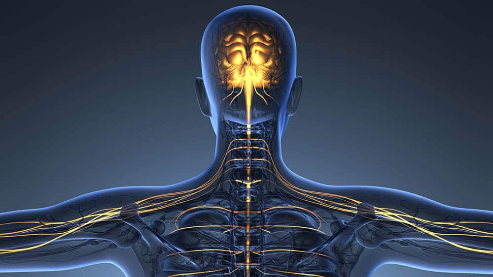

⠀⠀⠀⠀⠀21 de junho, data escolhida para a celebração do Dia Mundial de Conscientização sobre a Esclerose Lateral Amiotrófica (ELA) marca o início do verão no hemisfério norte (solstício) um ponto de virada e a cada ano a comunidade ELA realiza uma série de atividades para expressar sua esperança de que este dia seja um ponto de virada na busca pela causa, pelo tratamento e pela cura para a doença.
ELA é uma doença relativamente rara, com base na sua prevalência. Há aproximadamente 140.000 novos casos diagnosticados em todo o mundo a cada ano 384 novos casos todos os dias. No Brasil, a Lei nº 13.471/2017 instituiu o Dia Nacional de Luta Contra a Esclerose Lateral Amiotrófica (ELA), também comemorado em 21/6. A data objetiva levar conhecimento e sensibilizar governantes, profissionais de saúde e população sobre a existência e os cuidados com as pessoas acometidas pela doença, bem como buscar apoio aos pacientes, além do incentivo às pesquisas para melhorar o tratamento.
Esclerose Lateral Amiotrófica (ELA) é uma doença que afeta o sistema nervoso de forma degenerativa e progressiva, acarretando paralisia motora irreversível. Não se conhece a causa específica ainda, mas sabe-se que é provocada pela degeneração progressiva no primeiro neurônio motor superior no cérebro e no segundo neurônio motor inferior na medula espinhal. Esses neurônios são células nervosas especializadas que, ao perderem a capacidade de transmitir os impulsos nervosos, dão origem à doença.
Pacientes com ELA sofrem paralisia gradual e morte precoce como resultado da perda de capacidades cruciais, como falar, movimentar-se, engolir e respirar. Parece que a utilização excessiva da musculatura favorece o mecanismo de degeneração da via motora, por isso os atletas representam a população de maior risco. Outra causa provável é que dieta rica em glutamato seja responsável pelo aparecimento da doença em pessoas predispostas. Isso aconteceu com os chamorros, habitantes da ilha de Guan no Pacífico, onde o número de casos é cem vezes maior do que no resto do mundo.
Estudos recentes em ratos indicam que a ausência de uma proteína chamada parvalbumina pode estar relacionada com a falência celular característica da doença.
